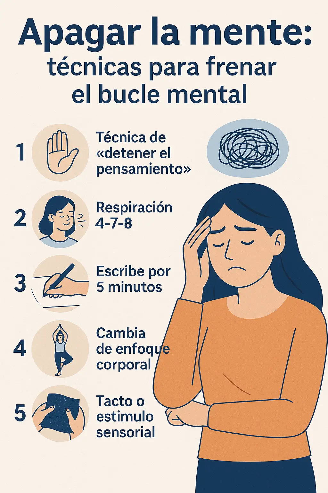
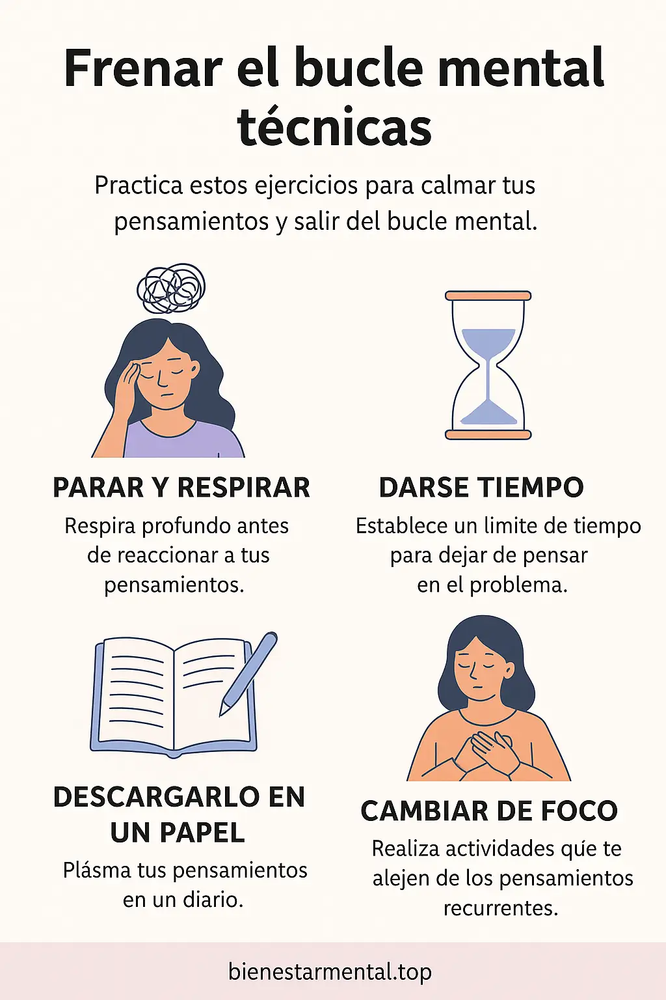

Apagar la mente: técnicas para frenar el bucle mental
Si sufres de sobrepensamiento constante o sientes que tu mente no para de dar vueltas una y otra vez, estás en un bucle mental. Afortunadamente, hay técnicas prácticas y accesibles que puedes aplicar para interrumpir ese ciclo y recuperar calma.
¿Qué es el bucle mental y por qué sucede?
El bucle mental es ese patrón repetitivo de pensamientos preocupantes, dudas o retrospección que no aporta soluciones. Generalmente, se activa en momentos de ansiedad, estrés o agotamiento emocional.
Esta rueda gira sin que puedas actuar, y cuanto más luchas contra ella, más se activa. Pero detenerla es posible.
Técnicas eficaces para detener el sobrepensamiento
1. Técnica de “detener el pensamiento”
Cuando notes que tu mente entra en el bucle, di en voz alta o mentalmente: “Basta”. Luego, reemplázalo con otra actividad, incluso pequeña (como estirar o beber agua). Esto crea una interrupción consciente.
2. Respiración 4‑7‑8
Inhala 4 segundos, retén 7, exhala 8. Repite 3 veces. Esta técnica fisiológica (también explicada en nuestra Guía de respiración) activa el sistema nervioso parasimpático y ayuda a relajar la mente.
3. Escribe por 5 minutos
Toma una hoja o tu diario de ansiedad y escribe sin filtro. No importa la letra o lo que salga. Desahogar esos pensamientos en papel suele liberar una carga mental significativa.
4. Cambia de enfoque corporal
Levántate y mueve el cuerpo: estira, camina o realiza yoga suave. El cambio físico interrumpe el patrón neuronal del bucle mental.
5. Tacto o estímulo sensorio
Acaricia una tela suave, toma agua fresca o frota tus manos. Los estímulos sensoriales pueden "resetear" tu sistema mental para salir del modo hiperactivo.
¿Cuándo aplicar estas técnicas?
- Cuando te cuesta dormir por pensamientos constantes.
- Antes de una reunión o tarea importante que disparan ansiedad.
- Si notas que estás rumiando algo del pasado o anticipando el futuro sin acción.
Combina estas técnicas con recursos útiles
- Ejercicios para calmar la mente rápido
- Artículo: cómo dejar de sobrepensar
- Usa un journal emocional para liberar pensamientos escritos
- Pausa consciente cuando la mente se acelera